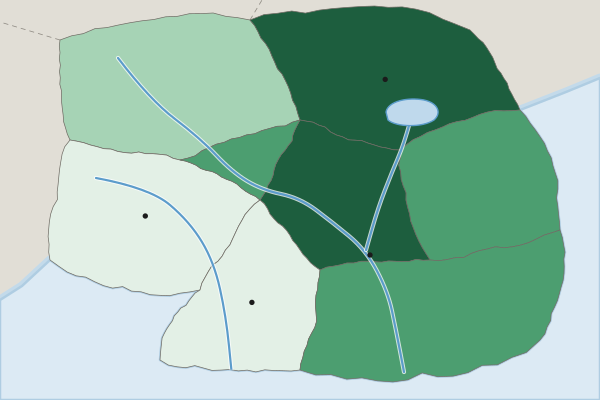

The question
Name: ______________________ Date: ____________ A census map of one country: scale, pattern and limits (7 points)
Map
Homes with piped water by province, Country A, 2020 census (invented)

Homes with piped water (percent, invented 2020 census)
- Under 40%
- 40% to 59%
- 60% to 79%
- 80% or more
(A) Identify Identify the scale of analysis of the data shown on the map. [1 point]
Identify means: Give the information asked for: a word or short phrase can earn the point, with no reasons needed.
(B) Describe Describe the pattern of homes with piped water shown on the map. [1 point]
Describe means: Give the relevant characteristics: what it is like, where and how much. A name alone earns nothing.
(C) Explain Explain one reason why the share of homes with piped water could be higher in the Capital Region than in the Western Uplands. [1 point]
Explain means: Say how or why, with every link of the chain: a cause, then because or so, then its effect, tied to the place or data asked about.
(D) Explain Explain how the national government of Country A could use these census data to make a decision. [1 point]
Explain means: Say how or why, with every link of the chain: a cause, then because or so, then its effect, tied to the place or data asked about.
(E) Explain Explain one limitation of census data such as these for planning water projects. [1 point]
Explain means: Say how or why, with every link of the chain: a cause, then because or so, then its effect, tied to the place or data asked about.
(F) Compare Compare what this map shows with what one national figure for piped water in Country A would show. [1 point]
Compare means: Give a similarity or a difference and say it about both things, not one.
(G) Explain the degree Explain the degree to which this map could be used to decide which villages within the Western Uplands need new water pipes. [1 point]
Explain the degree means: State the degree first (to a high, moderate or low degree), then explain why with evidence.